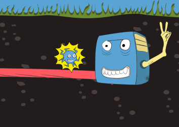
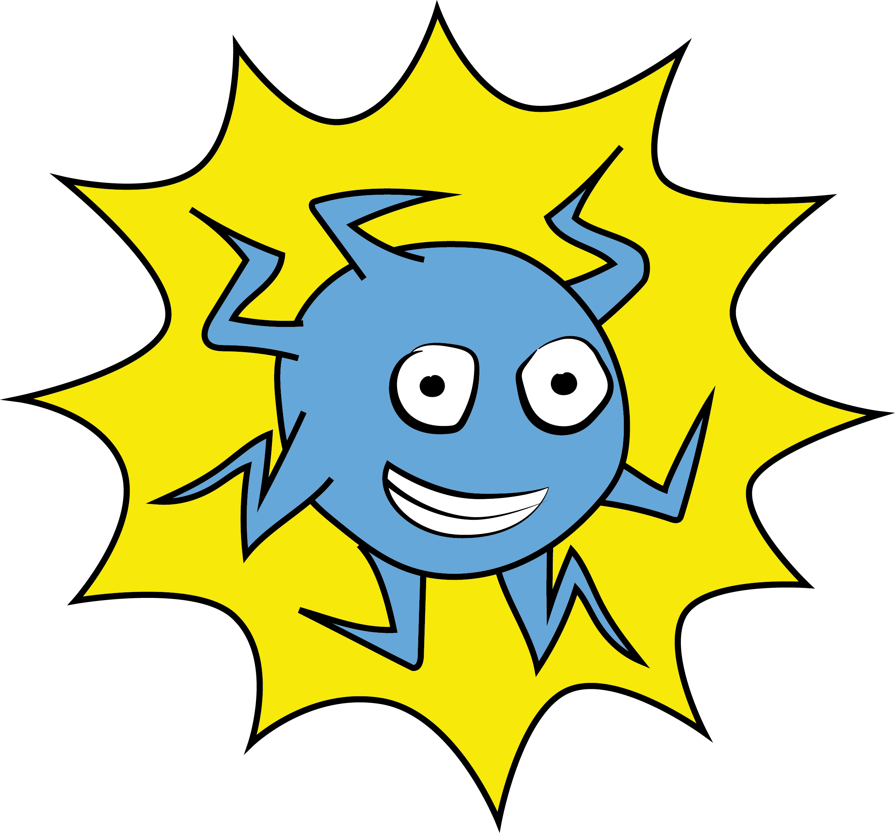

Global Game Jam 2018
January 28th, 2018
Global Game Jam is a yearly global event, where game developers from all over the world come together to create games in a single weekend. The 2018 GGJ was the first physical game jam event that I ever attended, and the first time I worked in a team. It was also the very first time I finished and released a game. The theme for this one was Transmission.
I met some cool people, and although we struggled to come up with an idea, we managed to get a game done. It was a bit buggy, but a whole lot of fun to work on, and I learned a lot.
Electric Runner
Electric Runner is the game we ended up making. The idea behind it was that you must run through a cable to reach (or transmit yourself to) a computer, while avoiding viruses and collecting powerups along the way.
Working in the environment of a game jam, with a team, under pressure to finish, was honestly exhilarating. After it was all said and done, I went home full of energy and immediately started looking for something else to work on, which is how I ended up making Yummy Tubes for a weekly game jam.
